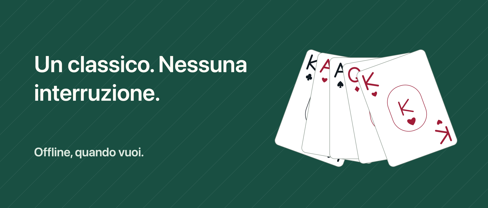

Solitario Unbound

Un momento per te, una carta alla volta.
Il tuo momento con le carte, senza interruzioni. Gioca a Klondike pesca 1 o pesca 3 senza pubblicità, account IFG o abbonamenti.
ANNULLA E RIPROVA Undo, redo e suggerimenti legali sono gratuiti. Trascina le carte oppure tocca carta e destinazione. Scegli Relax per nascondere il tempo, o Classica per vedere tempo e mosse.
UNA PARTITA DA RIPRENDERE I salvataggi e le statistiche restano sul dispositivo. Scegli una partita casuale o una disposizione con soluzione verificata, e torna per la sfida del giorno. Le partite casuali non sono tutte vincibili; anche una disposizione verificata può bloccarsi dopo le tue scelte.
PIÙ VARIANTI CON PRO Un unico acquisto aggiunge FreeCell, Spider con 1, 2 e 4 semi, archivio delle sfide e più personalizzazioni: sei tavoli, sei dorsi e tre stili di carte in totale. Nessun hint a consumo.
Il gioco funziona offline. Acquisto e ripristino Pro possono richiedere rete e account Apple. I progressi non si sincronizzano tra dispositivi e la disinstallazione può eliminarli. Ripristinare Pro non recupera i progressi cancellati.